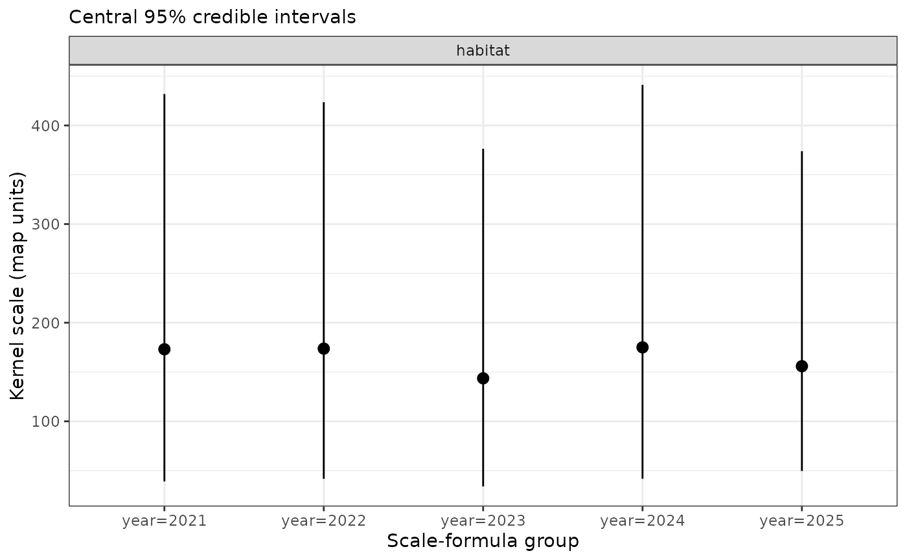
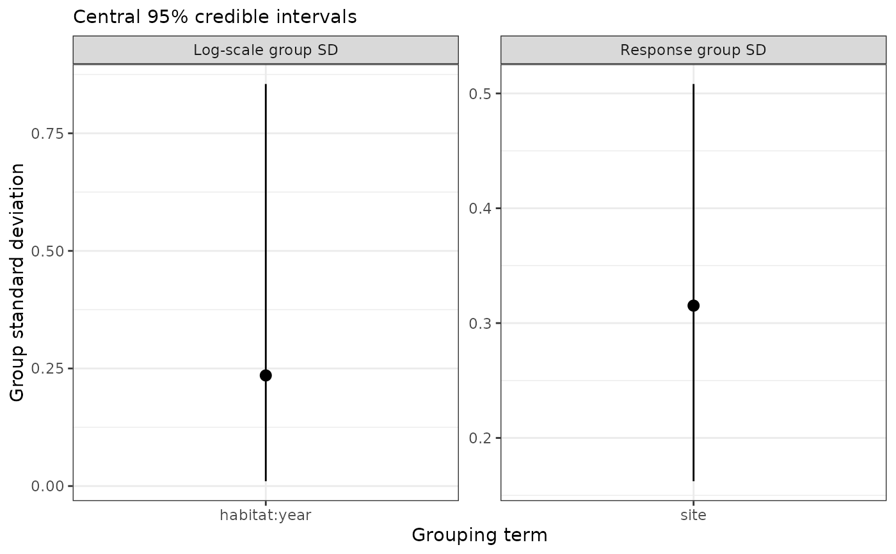
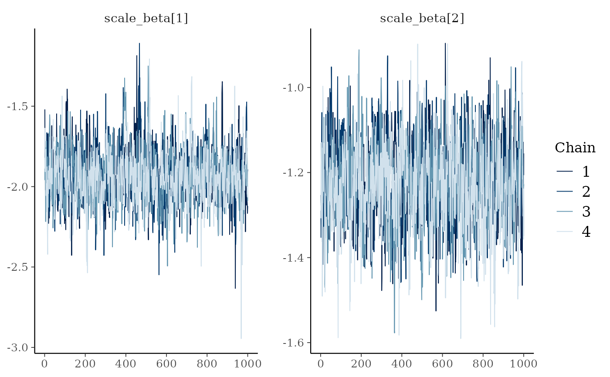

Plot Bayesian Landscape Scales and Group Variation
Source:R/bayes_scale_plot.R
plot.multiScaleR_bayes.RdDraw posterior medians and central credible intervals for the fitted scales, or for the standard deviations that describe variation among groups. Plotting does not refit the model or change its draws.
Arguments
- x
A fitted
multiScale_bayes()object with posterior draws.- type
"scales"(default) plots one interval for each distinct combination of scale covariates and groups, such as each year."group_sd"plots the between-group SDs, with scale and response effects in separate panels.- covariate
Optional character vector of landscape predictors to plot with
type = "scales". The defaultNULLplots every predictor.- level
Probability of the central credible interval; default 0.95.
- scale
"distance"(default) plots scales in projected map units."log"uses natural log map units, which helps when the upper limits are very large. Used only withtype = "scales". These are kernel scale parameters, not effective radii.- estimator
"auto"(default) uses the weighted production candidates of an importance-corrected fit and the stored draws otherwise."draws"always uses the stored draws, and"weighted"requires retained importance candidates. Weighted plotting avoids resampling noise but does not raise the effective sample size or recover a missed mode.- ...
Not used. Supplying any further argument is an error.
Value
A ggplot object. Its data holds the plotted summaries, including
median, lower, and upper. Scale panels also hold covariate and
group, and SD panels hold component and term. Print the object to
display it inside a function or loop. When the stored diagnostic flag of
the fit failed or is unavailable, the subtitle says so. Plotting computes
no new chain diagnostics.
Read the plots
With type = "scales", each point is the posterior median of one group's
scale and each bar its central credible interval. Annual intervals describe
uncertainty in each fitted year's scale. They are separate intervals, not a
joint band. With type = "group_sd", the scale panel shows the SD of log
scale among groups (tau), and exp(tau) is the multiplier on the scale
for a group one SD above typical. It is not the standard error of any
year's scale. The response panel shows random-intercept SDs on the link
scale. A shared-scale model without group effects has no group SD to plot.
The half-normal prior on an SD has no point mass at zero, so a positive lower limit does not establish that groups differ. Judge whether the variation is meaningful, and compare a shared-scale model. No plot establishes calibration or model adequacy.
For NUTS and slice fits, the stored flag describes checks on the original
parameters, and for NUTS also on sampler behavior. Use
diagnose_bayes_scales() to check the mixing and simulation precision of
the derived log scales and group SDs.
Draw chain plots
For chain plots, pass fit$chains for a slice fit, or
rstan::extract(fit$sampler, permuted = FALSE, inc_warmup = FALSE) for a
NUTS fit, to bayesplot. Use mcmc_trace() for trajectories,
mcmc_rank_overlay() for rank distributions by chain, and
mcmc_dens_overlay() for posterior densities by chain. Select
regex_pars = "^scale_beta" to see the scale-formula coefficients on the
internal log scale. Chain plots need the original post-warmup draws in
iteration and chain order. Approximate fits and compact examples support
only interval plots and posterior predictive checks.
Examples
example <- readRDS(system.file("extdata", "bayesian-annual-example.rds",
package = "multiScaleR"))
plot(example$fits$pooled) # sigma for each year, meters

plot(example$fits$pooled, type = "group_sd") # tau and the site SD

# The plotted summaries are kept in the ggplot object
p <- plot(example$fits$pooled, scale = "log")
p$data[c("group", "median", "lower", "upper")] # log meters
#> group median lower upper
#> 1 year=2021 5.153769 3.665746 6.068077
#> 2 year=2022 5.157573 3.730775 6.048786
#> 3 year=2023 4.967104 3.526924 5.930528
#> 4 year=2024 5.164878 3.733229 6.089283
#> 5 year=2025 5.049449 3.905682 5.924068
# Trace plots from a stored slice fit that keeps its chains
shared <- readRDS(system.file("extdata", "cache-bayesian-scales.rds",
package = "multiScaleR"))$fit
if (requireNamespace("bayesplot", quietly = TRUE)) {
print(bayesplot::mcmc_trace(shared$chains, regex_pars = "^scale_beta"))
}
